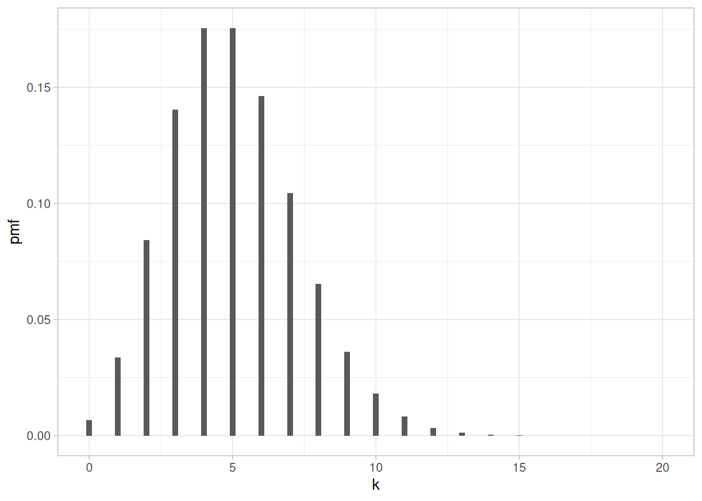
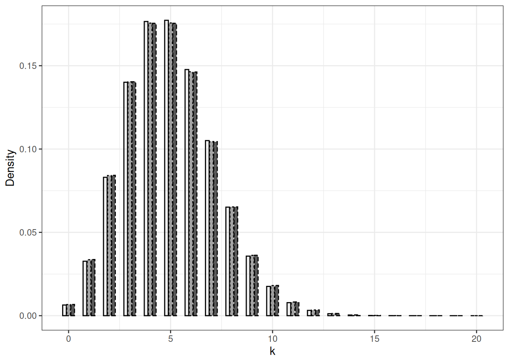
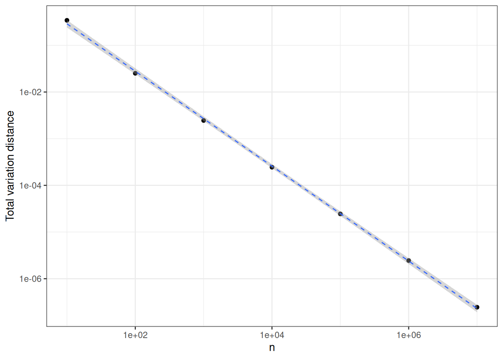

| 1 | 2 | 3 | 4 | 5 | 6 | 7 | 8 | 9 | 10 | |
|---|---|---|---|---|---|---|---|---|---|---|
| \(\omega\) | 2 | 3 | 1 | 2 | 4 | 4 | 2 | 3 | 2 | 5 |
1 Introduction
In this chapter we survey the basic definitions of Probability Theory starting from a simple modeling problem from computer science. The notions are formally defined in next chapters. The simple context allows us to carry out computations and to outline the kind of results we will look for during the course: moments, tail bounds, law of large numbers, central limit theorems, and possibly other kind of weak convergence results.
1.1 Hashing
Hashing is a computational technique that is used in almost every area of computing, from databases to compilers through (big) datawarehouses. Every book on algorithms contain a discussion of hashing, see for example Introduction to Hashing by Jeff Erickson.
Under idealized conditions, hashing \(n\) items to \(m\) values consists of applying a function picked uniformly at random among the \(m^n\) functions from \(1, \ldots, n\) to \(1, \ldots, m\). The performance of a hashing method (how many cells have to be probed during a search operation?) depends on the typical properties of such a random function.
It is convenient to think of the values in \(1, \ldots, m\) as numbered bins and of the items as \(n\) numbered balls. Picking a random function amounts to throw independently the \(n\) balls into the \(m\) bins. The probability that a given ball falls into a given bin is \(1/m\).
Questions around the random functions can be rephrased.
- How many empty bins on average?
- Distribution of the number of empty bins?
- How many bins with \(r\) balls?
- What is the maximum number of balls in a single bin?
Have a look at the http://stephane-v-boucheron.fr/post/2019-09-02-idealizedhashing/ and download the notebook from there.
This toy yet useful model is an opportunity to recall basic notions of probability theory.
In the sequel, we call this framework the random alllocations experiment.
In Table 1.1, line \(\omega\) represents the outcome of a random allocation with \(n= 10\), \(m= 5\): \(\omega_4= 2\), \(\omega_5= 4\), …
1.2 A Probability space
The set of outcomes is called the universe. In the random allocations setting it is the set of \(1, \ldots, m\)-valued sequences of length \(m\). This is also a function mapping \(\{1, \ldots, n\}\) to \(\{1, \ldots, m\}\). We denote a generic outcome by \(\omega\). The \(i^{\text{th}}\) element of \(\omega\) is denoted by \(\omega_i\). This universe is denoted by \(\Omega\), here it is finite with cardinality \(m^n\).
In this simple setting, the uniform probability distribution on the universe assigns to each subset \(A\) of \(\Omega\) the probability \(|A|/|\Omega|\). When the universe is finite or countable, all subsets of the universe are events, assigning a probability to every subset of the universe is not an issue.
Recall that a probability distribution \(P\) maps a collection \(\mathcal{F}\) of subsets of the universe (\(\mathcal{F} \subseteq 2^\Omega\)) to \([0,1]\) and satisfies:
- \(P(\emptyset)=0\)
- \(P(\Omega)=1\)
- for any countable collection of pairwise disjoint events \(A_1, A_2, \ldots, n, \ldots\), \(P(\cup_{n=1}^\infty A_n) = \sum_{n=1}^\infty P(A_n)\)
See Section 2.3.
This entails \(P(A_1 \cup A_2 \cup \ldots \cup A_k) = \sum_{i=1}^k P(A_i)\) for all finite collection of pairwise disjoint subsets \(A_1, \ldots, A_k\).
For the domain of \(P\) to be well-defined, the collection of subsets \(\mathcal{F}\) has to be closed under countable unions, countable intersections and complementation, to contain the empty set \(\emptyset\) and the universe \(\Omega\). In words, it has to be a \(\sigma\)-algebra, see Section 2.2.
Note that other probability distributions make sense on this simple universe. See for example the balanced allocations scenario.
In the ballanced allocations scenario, the random functions from \(1, \ldots, n\) to \(1, \ldots, m\) are constructed sequentially. We first construct \(\omega_1\) by picking a number uniformly at random from \(1, \ldots, n\). Now, assume we have constructed \(\omega_1, \ldots, \omega_i\) for some \(i<n\). In order to determine \(\omega_{i+1}\), we pick uniformly at random two numbers from \(1, \ldots, n\), say \(j\) and \(k\). We compute
\[ c_j = \Big|\{ \ell : 1\leq \ell \leq i, \omega_\ell = j\}\Big| \qquad\text{and} \qquad c_k = \Big|\{ \ell : 1\leq \ell \leq i, \omega_\ell = k\}\Big| \, . \]
If \(c_j < c_k\), \(\omega_{i+1}= j\) otherwise \(\omega_{i+1}= k\).
This iterative construction defines a (unique) probability distribution over \(\{1, \ldots, m\}^n\) that differs from the uniform probability distribution. It is non-trivial to show that it achieves a non-trivial balancing guarantee for the size of the preimages induced by \(\omega\).
1.3 Random variables and independence
Consider the real valued functions from \(\Omega\) to \(\mathbb{R}\) defined by:
\[X_{i, j}(\omega) = \begin{cases} 1 & \text{if } \omega_i = j \\ 0 & \text{otherwise} \, . \end{cases} \]
This function is a special case of a random variable see Section 2.5.
In the toy example outlined in Table 1.1, we have \(X_{4,1}(\omega)=1, X_{5,1}(\omega)=0, ...\).
Note that the definition of the random variable has nothing to do with the probability distribution we have considered so far. There is nothing random in a random variable. Moreover, a random variable is not a variable, it is a function. You may question this terminology, but it has been sanctified by tradition.
In the probability space \((\Omega, 2^\Omega, \Pr)\), the distribution of the random variable \(X_{i,j}\) is a Bernoulli distribution with parameter \(1/m\).
\[ \Pr \Big\{ X_{i,j} = 1\Big\} = \frac{1}{m} \qquad \Pr \Big\{ X_{i,j} = 0\Big\} = 1 - \frac{1}{m} \, , \]
see Section 4.1 for more on Bernoulli distributions. This comes from
\[ \Pr \Big\{\omega : X_{i,j}(\omega) = 1\Big\} = \frac{\Big|\{ \omega : X_{i,j}(\omega) = 1 \}\Big|}{m^n} = \frac{m^{n-1}}{m^n} = \frac{1}{m} \, . \]
Recall that \(\Pr \Big\{ X_{i,j} = 1\Big\}\) is a shorthand for \(\Pr \Big\{\omega : X_{i,j}(\omega) = 1\Big\}\).
For a while, we fix some \(j \in \{1, \ldots, m\}\) and consider the collection of random variables \((X_{i, j})_{i \leq n}\).
For each \(i\), we can define events (subsets of \(\Omega\)) from the value of \(X_{i,j}\):
\[\begin{align*} & \Big\{ \omega : X_{i,j}(\omega) = 1\Big\} \\ & \Big\{ \omega : X_{i,j}(\omega) = 0\Big\} \end{align*}\]
and together with \(\Omega, \emptyset\) they form the collection \(\sigma(X_{i,j})\) of events that are definable from \(X_{i,j}\).
Recall the definition of independent events or rather the definition of a collection of independent events.
A collection of events \(E_1, E_2, \ldots, E_k\) from \((\Omega, 2^{\Omega})\) is independent with respect to \(\Pr\) if for all \(I \subseteq \{1, \ldots, n\}\),
\[ \Pr \Big\{\cap_{i \in I} E_i \Big\} = \prod_{i \in I} \Pr \{ E_i \} \]
One can check that for each fixed \(j \leq m\), \((X_{i, j})_{i \leq n}\) is a collection of independent random variables under \(\Pr\). By this we mean that each collection \(E_1, E_2, \ldots, E_n\) of events where \(E_i \in \sigma(X_{i,j})\) for each \(i \in \{1, \ldots, n\}\), \(E_1, E_2, \ldots, E_n\) is an independent collection of events under \(\Pr\).
The notion of independence is a cornerstone of probability theory, see Chapter ?sec-independence.
Concretely, this means that for any sequence \(b_1, \ldots, b_n \in \{0,1\}^n\) (a possible outcome for the sequence of random variables \(X_{1,j}, X_{2,j}, \ldots, X_{n,j}\)), we have
\[\begin{align*} \Pr \Big\{ \bigwedge_{i=1}^n X_{i,j}(\omega) = b_i \Big\} & = \prod_{i=1}^n \Pr \Big\{ X_{i,j}(\omega) = b_i \Big\} \\ & = \prod_{i=1}^n \left(\frac{1}{m}\right)^{b_i} \left(1-\frac{1}{m}\right)^{1-b_i} \\ & = \left(\frac{1}{m}\right)^{\sum_{i=1}^n b_i} \left(1-\frac{1}{m}\right)^{n- \sum_{i=1}^n b_i} \, . \end{align*}\]
Observe that the outcome of the sequence \(X_{i,j}\) for \(i \in 1,\ldots,n\) is \(b_1, \ldots, b_n\) only depends on \(\sum_{i=1}^n b_i= Y_j\). This greatly simplifies computations.
We are interested in the number of elements from \(1, \ldots, n\) that are mapped (allocated) to \(j\) through the random function \(\omega\). Let us define
\[ Y_j(\omega) = \sum_{i=1}^n X_{i, j}(\omega) \, . \]
In the toy example described in Table 1.1, \(Y_3(\omega) = 4\) while \(Y_5(\omega)=1\) and \(Y_4(\omega)=0\):
| \(j\) | 1 | 2 | 3 | 4 | 5 |
| \(Y_j\) | 1 | 4 | 2 | 2 | 1 |
Occupancy scores
In the probability space \((\Omega, 2^\Omega, \Pr)\), the random variable \(Y_j\) is distributed as a sum of independent, identically distributed Bernoulli random variables, that is, according to a Binomial distribution, see Section 4.1.
\[ \Pr \Big\{ Y_j = r \Big\} = \binom{n}{r} p^r (1-p)^{n-r} \qquad \text{with} \quad p =\frac{1}{m} \]
for \(r \in 0, \ldots, n\).
Indeed, recall
\[\begin{align*} \Pr \Big\{ Y_j = r \Big\} & = \sum_{\omega : Y_j(\omega) = r} \Pr\Big\{\omega\Big\} \\ & = \sum_{\omega : Y_j(\omega) = r} \left(\frac{1}{m}\right)^{r} \left(1-\frac{1}{m}\right)^{n- r} \\ & = \left| \Big\{ \omega : \omega \in \Omega, Y_j(\omega) = r \Big\} \right| \times \left(\frac{1}{m}\right)^{r} \left(1-\frac{1}{m}\right)^{n- r} \\ & = \binom{n}{r} \left(\frac{1}{m}\right)^{r} \left(1-\frac{1}{m}\right)^{n- r} \, . \end{align*}\]
For large \(n,m\), this Binomial distribution tends to be concentrated around its mean value or expectation
\[ \mathbb{E} Y_j = \sum_{r=0}^n r \times \Pr \Big\{ Y_j = r \Big\} = \frac{n}{m} \, . \]
See Chapter 3 for a systematic approach to expectation, variance and higher moments, based on Integration theory.
The last chapter ?sec-chapConcentration is dedicated the development of tail bounds for random variables like \(Y_j\) that are smooth functions of independent random variables.
For the moment recall that on a countable probability space, the expectation of random variable \(Z\) can be defined as
\[ \mathbb{E} Z = \sum_{\omega \in \Omega} \Pr\{\omega\} \times Z(\omega) \]
provided the series is absolutely convergent.
This is illustrated by Figure 1.1. In principle, a binomial random variable with parameters \(n=5000\) and \(p=.001\) can take any value between \(0\) and \(5000\). However, most (more than \(95\%\)) of the probability mass is supported by \(\{1, \ldots, 10\}\).

1.4 Convergences
If we let \(n,m\) tend to infinity while \(n/m\) tends toward \(c>0\), we observe that, for each fixed \(r\geq 0\) the sequence \(\Pr \Big\{ Y_j = r \Big\} = \binom{n}{r} (1/m)^r (1-1/m)^{n-r}\) tends towards \[
\mathrm{e}^{-c} \frac{c^r}{r !}
\]
which is the probability that a Poisson distributed random variable with expectation \(c\)equals \(r\) (see Section 4.2 for more on Poisson distributions).
This is an instance of the law of rare events, a special case of convergence in distribution see Chapter 10.
The ability to approximate a Poisson distribution using an appropriate Binomial distribution is illustrated in Figure 1.2. The difference between the probability mass functions of the Binomial distributions with parameters \(n=250, m=0.02\), and \(n=2500, m=0.002\) and the Poisson distribution with parameter \(5\) is small. If we chose parameters \(n=2500, m=0.002\), the difference between Binomial and Poisson is barely visible.

The proximity between Binomial\((n, \lambda/n)\) and Poisson\((\lambda)\) can be quantified in different ways. A simple one consists in computing \[ \sum_{x \in \mathbb{N}} \Big| p_{n, \lambda/n}(x) - q_\lambda(x) \Big| \] where \(p_{n, \lambda/n}\) (resp. \(q_{\lambda}\)) stands for Binomial (resp. Poisson). This quantity is called the variation distance between the two probability distributions. A general definition is provided in Chapter 10. In Figure 1.3, this distance between Binomial distribution with parameters \(n,5/n\) and Poisson(5) is plotted against \(n\) (beware logarithmic scales). This plot suggests that the variation distance decays like \(1/n\). This is checked in Chapter 10.

In the probability space \((\Omega, 2^\Omega, \Pr)\), the random variables \(Y_j, Y_j', j\neq j'\) are not independent. In order to show that \(Y_j, Y_j', j\neq j'\) are not independent, it suffices to check that two events \(E_j, E_{j'}\) are not independent with \(\omega \in E_j\) being a function of \(Y_j\) and \(\omega \in E_{j'}\) being a function of \(Y_{j'}\) (later, we will concisely say \(E_j \in \sigma(X_j)\) or \(E_j\) being \(Y_j\)-measurable). Choose \(E_j = \{ \omega : Y_j(\omega) =r\}\) and \(E_{j'} = \{ \omega : Y_{j'}(\omega) =r\}\).
\[\begin{align*} \Pr(E_j) & = \binom{n}{r} \left(\frac{1}{m}\right)^r \left(1 - \frac{1}{m}\right)^{n-r} \\ \Pr(E_j \cap E_{j'}) & = \binom{n}{r} \times \binom{n-r}{r} \left(\frac{1}{m}\right)^{2r} \left(1 - \frac{2}{m}\right)^{n-2r} \, \end{align*}\]
\[ \frac{\Pr(E_j \cap E_{j'}) }{\Pr(E_j) \times \Pr(E_{j'})} = \frac{\left(1 - \frac{2}{m}\right)^{n-2r}}{\left(1 - \frac{1}{m}\right)^{2n-2r}} \frac{((n-r)!)^2}{n!(n-2r)!} \neq 1 \, . \] Hence, if we define
\[ K_{n,r}(\omega) = \sum_{j=1}^m \mathbb{I}_{Y_j(\omega)=r} \] as the number of elements of \(1, \ldots, m\) that occur exactly \(r\) times in \(\omega\), the random variable \(K_{n,r}\) is not described as a sum of independent random variables. Nevertheless, it is possible to gather a lot of information about its moments and distribution. If we let again \(n,m\) tend to infinity while \(n/m\) tends toward \(c>0\), we observe that the distribution of \(K_{n,r}/m\) tends to concentrate around \(\mathrm{e}^{-c} \frac{c^r}{r !}\). This is an example of convergence in probability, see Chapter 9.
Now, if we consider the sequence of recentered and rescaled random variables \((K_{n,r} - \mathbb{E}K_{n,r})/\sqrt{\operatorname{var}(K_{n,r})}\), we observe that its distribution function (see Section 2.7) converges pointwise towards the distribution function of the Gaussian distribution.
| $K_{n,1}$ | $K_{n,2}$ | $K_{n,4}$ |
|---|---|---|
| 2 | 2 | 1 |
1.5 Summary
In this chapter, we investigated a toy stochastic model: random allocations. This toy model was motivated by the analysis of hashing, a widely used technique from Computer science. To perform the analysis, we introduced notation and notions from probability theory:
- Universe,
- Events,
- \(\sigma\)-algebras,
- Probability distributions,
- Preimages,
- Random variables,
- Expectation,
- Variance,
- Independence of events,
- Independence of random variables,
- Binomial distribution,
- Poisson distribution.
Through numerical simulations, we got a feeling of several important phenomena:
- Law of rare events: approximation of Poisson distribution by certain Binomial distributions.
- Law of large numbers for normalized sums of identically distributed random variables that are not independent.
- Central limit theorems for normalized and centered sums of identically distributed random variables that are not independent
At that point, our elementary approach did not provide us with the notions and tools that make possible the rigorous analysis of these phenomena.